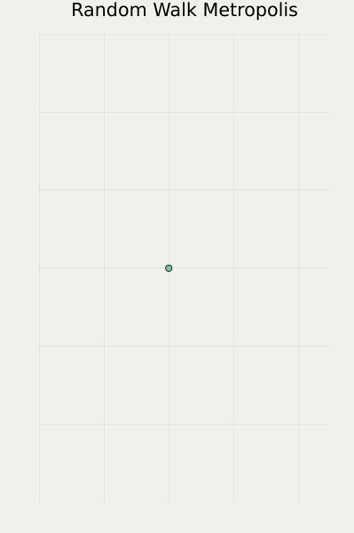

AI の信頼性と「不確実性の定量化」
AI 技術が真に成熟に向かうには「信頼性」がキーワードになるだろう．
下図は semantic segmentation と言って，画像を見て意味論的に領域を分割するタスクである：


大雑把にだが，道路の構造を捉えられている．この正答率を上げることだけが，AI 開発の全てだろうか？
答えは否である．次は「モデルの不確実性」を定量化して出力したものである：

モデルが「この道路はガタガタしていてどこが境界かよくわからない！」と訴えているのがわかるだろうか？
精度が 100% に近いモデルの開発を目指すより，「モデルに自信がないときは速度を落とす」などの運用の方がよっぽど現実的である．
私の目標は，精度の意味で AI の性能を上げるだけでなく，「不確実性の表現」も「最適」に行う，総合的な AI の発展を目指すことである．
ベイズ統計学
現代の AI 技術は何も突然降ってきたわけではなく，統計学の蓄積に拠るところが多い．
統計学はすでに１世紀以上の歴史があるが，そのなかで「不確実性の定量化」の代表的手法といえば ベイズ統計学 であった．

ベイズ手法の魅力はその汎用性にあり，統計学だけでなく，数値解析，逆問題，情報科学など，様々な分野で確率論を応用する共通言語になりつつある．
AI はそのもっとも先鋭な例である．
サンプリングによる不確実性の定量化
ベイズ手法をコンピューター上で実行する方法のひとつに サンプリング法 がある．
ここで，（広く統計・機械学習で）サンプリングと言ったとき，ほとんど Monte Carlo 法と同義である．
Monte Carlo 法は戦時中，アメリカのマンハッタン計画において，原爆のメカニズム（中性子の拡散）をシミュレーションするために開発された．
その後の発展の様子を下図に示す（左端がオリジナルの Monte Carlo 法，右に行くほど新しい手法）：



筆者は最右端のクラスに属する手法を専門に研究している．
他の２つと比べて，はっきりまっすぐ動くのがわかるだろう．
このクラスのダイナミクスを数理的には PDMP (Piecewise Deterministic Markov Process) と呼ぶ．
日本語では区分確定的マルコフ過程，などと呼んでも良い．
PDMP は収束が速い
Monte Carlo 法は粒子の動きをコンピュータ上で模倣することで，物理現象をシミュレーションする．
その際，計算が速く，より大規模な粒子系が扱えるほど良い．この性質を スケーラビリティ という．
PDMP は今までにないスケーラビリティが達成できる手法として期待されている．1
ここで計算の速さとは，数学的にはマルコフ過程の平衡分布への収束の速さと同じである．
従来法よりも PDMP の方が平衡に至るのが速い理由は，少し飛躍があるが，「コーヒーに砂糖を溶かす際，ただ砂糖を見つめて，砂糖粒子の拡散にまかせるのではなく，スプーンで混ぜたほうが速い」という加速法を，極限まで取り入れたのが PDMP である．2
効率的な PDMP をどう作るか？
では問題であるが，次は２つの別々の PDMP に基づく Monte Carlo 手法である．どちらの方が収束が速いだろうか？


見ただけではわからないだろう．あまり違いがないと思う人も多いかもしれない．
しかし，実際は後者の方が常に速い．（しかも，このことが，非平衡統計物理の Green-久保の公式からわかる！）
上のアニメーションは１次元だから細かい違いかもしれないが，現代の AI モデルのパラメータ空間のような高次元では顕著な違いが出てくる．
この違いが数理的にわからないと「どうすればより良いアルゴリズムを開発できるか？」「PDMP の枠組みで次世代のスケーラビリティを持つサンプリング法が創出できるか？」という問いには立ち向かえない．
PDMP のスケーリング解析
つまり「粒子の数を無限大にしていく極限」で，「アルゴリズムがどれくらいのレートで遅くなっていくか？」を調べ，その性能悪化のレートが遅ければ遅いほどよい．
これを行う数学的枠組みを スケーリング解析 という．3
PDMP のアルゴリズム的に良い性質の多くは，hypocoercivity や遷移作用素の非対称性など，数学的に難しい性質が下支えしているため，解析は理論的に難しい．4
だが，だからこそ理論的にアルゴリズムの性能を解析し，新しいアルゴリズム創出のヒントが得られた場合には，真に「信頼のおける AI」への一歩が踏み出せることになる．
終わりに
私は数理的な背景を活かし，Monte Carlo 法の理論解析を主軸に据えている．だが同時に，理論的な知見を，アルゴリズムとして実装することにも莫大な価値があると考えている．
その信念の下，Software セクション で紹介している通り，PDMP のアルゴリズムを実装した Julia パッケージ PDMPFlux.jl を公開している．
自身の研究から得られた結果を実装し，広く研究・実用に使える環境を継続的に整えていく，理論と実装を両輪とする研究が目標である．本稿に掲載している Monte Carlo 法のアニメーションも，本パッケージからの出力である．
References
Footnotes
正確には，確率勾配を取り入れることにより，大規模データに対応できるのは従来手法も同じである (Welling and Teh, 2011) が，確率勾配の導入により，アルゴリズムにバイアスが導入されないという良い性質を満たすものは，今のところ PDMP のみである (Fearnhead et al., 2018)．↩︎
「スプーンで混ぜる」ようなギミックを取り入れた Markov 連鎖は非対称性という性質で特徴づけられる (Diaconis et al., 2000), (Chen et al., 1999), (Neal, 2004), (Diaconis, 2013)．このような非対称な Markov 連鎖の連続時間極限として PDMP は現れる (Peters and de With, 2012), (Bierkens and Roberts, 2017), (Tartero and Krauth, 2024)．例えば，空間の広さが \(n\) であるとき，通常のランダムウォークは収束までに \(n^2\) のステップを必要とするところを，特定の場合には，決定論的なダイナミクスを導入することで \(n\) や \(\log n\) で収束するように加速することが可能 (Chung et al., 1987)．↩︎
MCMC の分野では，上述の通り「スケーリング」が大事なのでこのように呼ぶが，PDE における averaging, homogenization，queueing network における流体極限や拡散近似などと数理的には全く同様であり，関数空間上での中心極限定理の成立を調べることを指す．↩︎
(Andrieu et al., 2021) は hypocoercivity， (Andrieu and Livingstone, 2021), (Bierkens and Lunel, 2022) は非可逆性＝作用素の非自己共役性が中心的なテーマになっている．↩︎